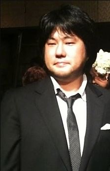

Biography

"Inherited Will, The Destiny of the Age, and The Dreams of the People. As long as people continue to pursue the meaning of Freedom, these things will never cease to be!"
- Eiichiro Oda
Eiichiro Oda: The Visionary Behind "One Piece"
Eiichiro Oda is a Japanese manga artist, best known for his groundbreaking manga series "One Piece". Born on January 1, 1975, in Kumamoto, Japan, Oda showed an interest in manga from a young age.
- At the age of 17, he submitted a one-shot story called "Wanted!" which won several awards and marked the beginning of his illustrious career.
- In 1997, "One Piece" began serialization in Weekly Shōnen Jump and has since become one of the best-selling manga series of all time.
- Oda's dedication and creativity have made him one of the world's most prominent mangaka, earning an estimated ¥3.1 billion (US$23 million) per year.
Despite his rigorous work schedule, Oda maintains steady correspondence with his fans through both formal interviews and informal channels such as his SBS (Shitsumon o Boshū Suru?, "I'm Taking Questions") columns. His commitment to his craft and his engagement with his audience have cemented his legacy as a beloved figure in the world of manga.
Qualities:
- Creative genius
- Storytelling Mastery
- Attention to Detail
- Consistency and Dedication
- Innovation
- Passion
- Work Ethic
- Humor and Heart
- Influence and Impact
Works:
- Wanted! (1992) - The story opens with Wild Joe, a bounty hunter, going after the head of the wanted criminal Gill Bastar.
- Ikki Yako (1993) - A short story about a man and his adventures in the afterlife.
- God's Gift for the Future (1993) - A short story about a man who becomes a god after his death.
- Monsters (1994) - A short story featuring a swordsman named Ryuma, who would later appear in "One Piece."
- Romance Dawn, Version 1 (1996) - A one-shot that introduced the character of Monkey D. Luffy and the concept of the Gum-Gum Fruit.
- Romance Dawn, Version 2 (1996) - Another one-shot with a slightly different storyline and character designs, serving as a precursor to "One Piece."
- One Piece (1997-Present) - Oda's most famous and ongoing work, chronicling the adventures of Monkey D. Luffy and his pirate crew in search of the ultimate treasure, One Piece.
Awards
- 1992: Second place Tezuka Award for "Wanted!"
- 1993: Hop☆Step Award for "Ikki Yakō"
- 2000: Tezuka Osamu Cultural Prize finalist for "One Piece"
- 2001: Tezuka Osamu Cultural Prize finalist for "One Piece"
- 2002: Tezuka Osamu Cultural Prize finalist for "One Piece"
- 2005: Sondermann Award in the International Manga category for "One Piece"
- 2006: Japanese Media Arts Festival 100 Manga Selection for "One Piece"
- 2008: Sondermann Award in the International Manga category for Volume 44 of "One Piece"
- 2009: Sondermann Award in the International Manga category for Volume 48 of "One Piece"
- 2012: Received Grand Prize at 41st Japan Cartoonists Association Award for "One Piece"
- 2015: Guinness World Record for "the most copies published for the same comic book series by a single author" with 320,866,000 copies printed worldwide up until December 2014.
- 2018: Kumamoto Prefecture Honorary Prize
- 2019: Most Searched Author at The Yahoo! Japan Search Awards
- 2019: Included in the list of Newsweek Japan's "100 Globally respected Japanese people"
- 2022: Special Lifetime Achievement Award at Napoli Comicon 2022 in Italy
- 2022: Guinness World Record for "the most copies published for the same comic book series by a single author" with 516,566,000 copies printed worldwide up until July 2022
- 2023: 18th Shin Watanabe Award, an award for a producer or creator who has created a major movement in the entertainment business and made a significant contribution to the development of popular entertainment culture.